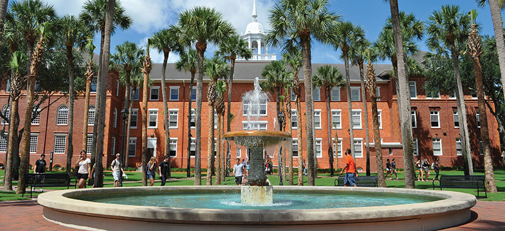
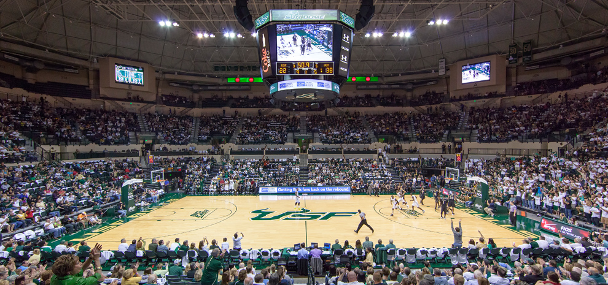
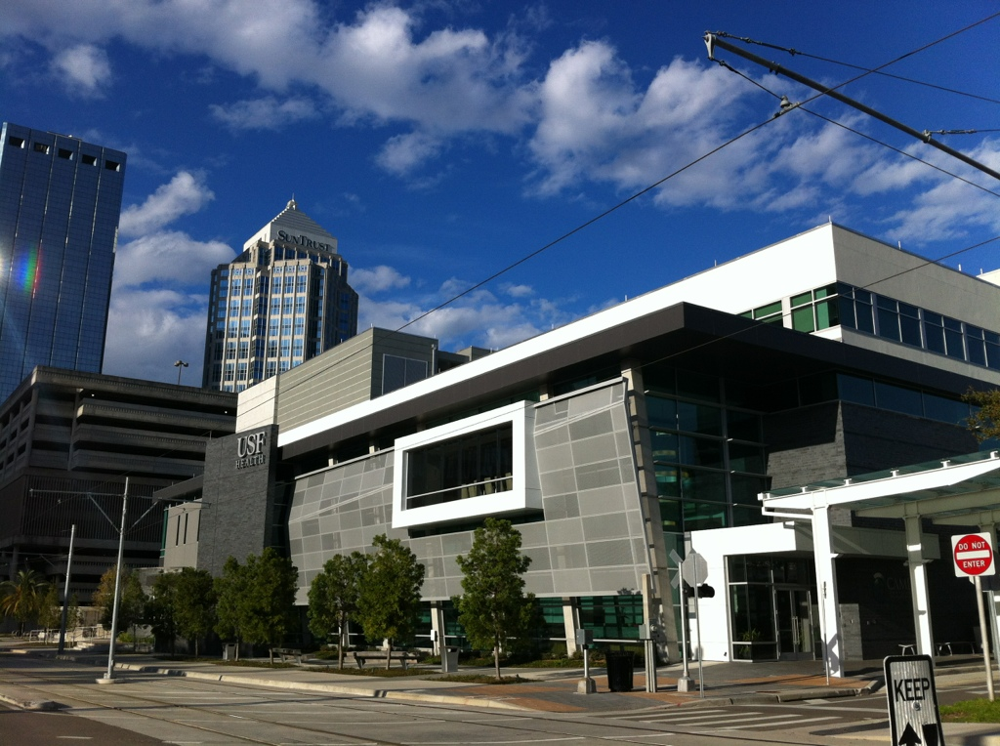

English Name: The University of South Florida School Website www.usf.edu School Introduction: The University of South Florida was founded in 1956. It is one of 63 top national public research universities in the United States, and is one of 39 community-locked, four-year ...
English name: The University of South Florida
School website www.usf.edu
School Introduction
Founded in 1956, the University of South Florida is one of 63 nationally recognized top public research universities in the United States, and 39 are community-locked, four-year programs Public universities One of the universities. In 2016, USNEWS ranked it 156th. This new university grew from its initial 2,000 students to 47,000 students in just over 40 years, becoming one of the 20 largest universities in the United States and still growing. Walking through such a new and vibrant campus, it feels as bright as the Sunshine of Florida that the University of South Florida has a bright future. The main campus of the University of South Florida Tampa covers 1,700 acres, making it the ninth largest school by area in the United States, with three other campuses being St. Petersburg（St. Petersburg), Sarasota, and Lakeland campuses. Students can drive about 1 hour away Orlando Disney World。Florida Southern University Responding to the rapid growth of cities that require a large number of talents, it has grown within decades to become one of the nation's leading research universities. It has been developed Carnegie Foundation Listed as "The art of teaching It is one of the "universities of higher education," with a large number of outstanding faculty and is ranked among the "Top 100 Research Universities in the United States." Each year, the university receives approximately $250,000,000 in external funding for various research and Development projects。 Today, the University of South Florida has become the third largest public university in Florida and one of the top twenty public universities in the United States. The University of South Florida is located in Tampa Bay, Florida, in the southern United States, with mild winters and a typical tropical climate in summer.

Geographical location
The University of South Florida is located in Florida, a state in the southern United States. Florida has three very famous cities: Orlando, Miami, and Tampa. Orlando is most famous for Disneyland, which is also the largest Disney park in the United States. Its full name is Walt Disney World Resort, which is divided into seven major theme parks. Orlando Disneyland The entire campus is astonishingly large, even larger than the urban area of any provincial capital city in China (excluding municipalities). Miami is located at the southeastern tip of the United States, making it the 11th largest metropolis in the country. It has a tropical climate, warm and humid climate, beautiful coastal scenery, and is a famous tourist destination in the United States. Tampa is in southwestern Florida, and our University of South Florida is also located in this city.

Professional curriculum offerings
There are 134 undergraduate majors, 138 master's programs, and 90 doctoral programs.
Undergraduate course directions: Business, Computer Science, Integration, Engineering, Science.
Business School: Accounting, Advertising, Business Administration and Management, Business management Economics, Finance - General, Business - General, International Business Management、Management information systems Marketing management
School of Engineering: Comprehensive Engineering, Chemical Engineering, civil engineering, electrical/Electronic engineering, Industrial/Manufacturing engineering Mechanical engineering
School of Computer Science: Computer science、Computer Information Systems、Computer engineering
School of Arts and Sciences: Biology, Marine biology、Biomedicine Science, chemistry, environmental science and policy, geology, interscience Biological sciences as well as physical sciences, mathematics-integrated science, medical technology, microbiology, Bacteriology, physics, statistics
Medical School: Athlete training
College of Nursing: Nursing/Registered nurse
School of Arts and Sciences: African Studies, American Studies, Anthropology, Classical, Economics, Integrated English, English Creative Writing, Russian, German, French, Italian, Spanish, Geography, Geology, History, Humanities, international relations, mass communication, philosophy, Political science Government, psychology, religious studies, rhetoric and communication, sociology, and women's studies
Conduct is appropriate Community colleges：Criminology Gerontology, Health Service Management (Long-term Care), Social Sciences - Integrated, Speech Pathology, and Audiology
Faculty of Education: Education (dance, primary school teacher, early childhood education). Children's education English, foreign languages, mathematics, music, physics, science, social sciences, special
School of Arts: Arts (Art and Appreciation, Art Studios), Dance, Music (Performance, Research), Dramatic arts
Graduate Tracks:
MBA, business majors, comprehensive studies, and applied technology Entrepreneurship Finance, Management, Marketing, Mechanical Engineering, Comprehensive Engineering, Electrical engineering, chemical engineering, Biomedical engineering Chemical engineering, civil and environmental engineering, computer science and engineering, engineering management, global sustainability
Master of Business Administration Entrepreneurship using applied technology Master of Science, Master of Science in Management, Master of Science in Finance, Master of Science in Marketing, Master of Arts in Global Sustainability, Master's degree in Mechanical Engineering, Master of Science in Mechanical Engineering, Master of Chemical Engineering, Master of Science in Chemical Engineering, Biomedical engineering Master of Science, Master of Science in Electrical Engineering, Master of Civil Engineering, Master of Science in Civil Engineering, Master of Environmental Engineering, Master of Science in Environmental Engineering, Master of Science in Computer Science, Master of Science in Computer Engineering, Computer tube Master of Science

Admission requirements
Undergraduate: TOEFL 60-80, IELTS 5.5-6.5, GPA 3.0
Graduate students: TOEFL 65-80, IELTS 5.5-6.5, GPA 3.0

Tuition fees
Tuition: $18,190 - $27,100/year
Living expenses: $8,000 - $12,000/year
Total cost: approximately $40,000 per year

英文名称 The University of South Florida
学校网站 www.usf.edu
学校简介
南佛罗里达大学建于1956年，南佛罗里达大学是63所美国国家一流的公立研究大学中的一所，并且是39所社区锁定，4年制公立大学中的一所。2016年USNEWS排名第156名。这所新型的大学仅用40多年的时间从开始的2000名学生发展到拥有4.7万名学生的大学，成为全美20所最大的大学之一，而且仍在不断的发展。行走在这么一个新型而焕发着勃勃生机的校园里感觉南佛罗里达大学如同佛罗里达的阳光一样会有一个灿烂的未来。南佛罗里达大学Tampa主校园占地1700英亩，是美国占地面积第九大的学校，另外3个校园为St. Petersburg（圣彼得堡）、Sarasota（撒拉索塔）和Lakeland（来克兰）校园。学生开车1小时可到达奥兰多迪斯尼世界。佛罗里达南方大学顺应了城市快速增长后所需大量人才的趋势，在几十年内成长为全国主要的研究性大学之一。被卡耐基基金会列为“教学艺术高等学校”之一，拥有大批出色的教师，以及位列“美国研究性大学100强”之列。每年，学校都能接受到大约250，000，000美元的外部资助，用于各类研究和发展项目。时至今日，南佛罗里达大学已经成为佛州第三大及全美前二十大公立大学之一。南佛罗里达大学坐落在美国南部的佛罗里达州坦帕湾（Tampa Bay），冬天比较温和，夏天是典型的热带气候。
地理位置
南佛罗里达大学坐落在美国南部的佛罗里达州，佛罗里达州有三个非常著名的城市，它们是：奥兰多（Orlando）、迈阿密（Miami）、坦帕（Tampa），奥兰多这座城市最有名的是迪斯尼乐园，它也是美国本土最大的迪斯尼乐园，全称叫Walt Disney World Resort，分为七个比较大的主题公园，奥兰多迪斯尼乐园的整个园区面积大的非常惊人，甚至超过我国任何一个省会城市的市区（直辖市除外）。迈阿密地处美国东南端，是全美第11大都市，属热带气候，温暖湿润，海岸风景秀丽，是美国著名的旅游胜地。坦帕在佛罗里达州的西南部，我们的南佛罗里达大学也坐落在这座城市。
专业课程设置
本科专业134个，硕士专业138个，博士专业 90个。
大学本科课程方向：商业、计算机、综合、工程学、科学。
商学院：会计、广告、商务行政与管理、商务管理经济学、金融-综合、商业-综合、国际商务管理、管理信息系统、营销管理
工程学院：综合工程、化学工程、土木工程、电气/电子工程、工业/制造工程、机械工程
艺术与科学学院：生物学、海洋生物学、生物医学科学、化学、环境科学与政策、地质学、跨科学生物科学及物理科学、数学-综合、医药科技、微生物、细菌学、物理学、统计学
医学院：运动员训练
护士学院：护理学/注册护士
艺术与科学学院：非洲研究、美国研究、人类学、古典型、经济学、英语综合、英语创意写作、俄语、德语、法语、意大利语、西班牙语、地理学、地质学、历史、人文学、国际关系、大众交流、哲学、政治科学与政府、心理学、宗教研究、修辞与交流、社会学、女性研究
行为与社区学院：犯罪学、老人学、健康服务管理（长期护理）、社会科学-综合、言语病理和听力学
教育学院：教育（舞蹈、小学教师、早期儿童教育、英语、外国语言、数学、音乐、物理、科学、社会科学、特殊）
艺术学院：艺术（艺术与欣赏、艺术工作室）、舞蹈、音乐（表演、研究）、戏剧艺术
研究生方向：
MBA、商务专业的综合学习、应用科技创业学、金融、管理学、营销、机械工程、综合工程、电气工程、化学工程、生物医学工程、化学工程土木和环境工程、计算机科学和工程、工程管理、全球可持续发展
学位课程：
工商管理硕士、应用科技创业理学硕士、管理理学硕士、金融理学硕士、营销理学硕士、全球可持续性文学硕士、机械工程硕士、机械工程理学硕士、化学工程硕士、化学工程理学硕士、生物医药工程理学硕士、电气工程理学硕士、土木工程硕士、土木工程理学硕士、环境工程硕士、环境工程理学硕士、计算机科学理学硕士、计算机工程理学硕士、计算机管理学硕士
入学要求
本科：托福 60-80 雅思 5.5-6.5 GPA 3.0
研究生：托福 65-80 雅思 5.5-6.5 GPA 3.0
学费情况
学费：$18190 - $27100/年
生活费：$8000 - $12000/年
总费用：$40,000左右/年
English edition. Select 中文原文 to compare with the original Chinese article.
This article is edited and published by Liaoning Overseas Study Service Co., Ltd. The content is for study abroad planning reference only. Unauthorized reproduction is prohibited.
Information on policies, regulations, admissions brochures, and program fees is timely. Please refer to the latest releases from official institutions and institutions in various countries; For detailed verification, please Contact an advisor。